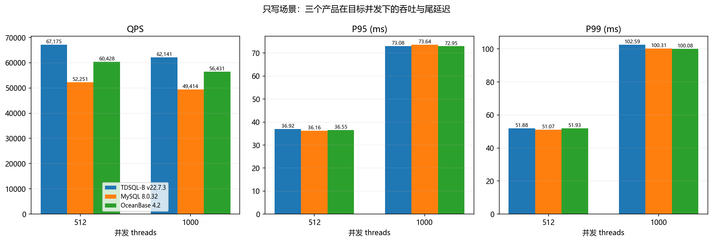
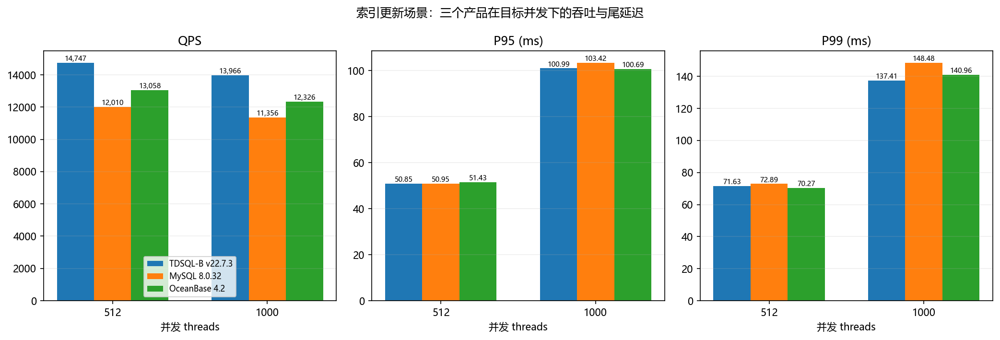
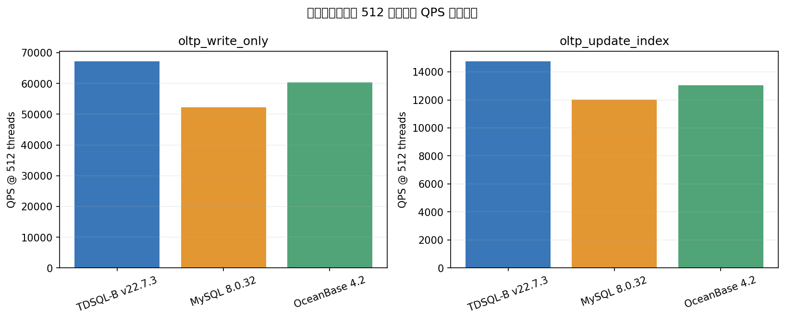

oltp_write_only 与 oltp_update_index｜512、1000 并发｜3 产品
限定比较 TDSQL-B v22.7.3、MySQL 8.0.32、OceanBase 4.2 在 oltp_write_only 与 oltp_update_index 场景、512 和 1000 并发下的 QPS、P95、P99；逐产品逐场景列数并据此给出选择建议。
| 产品 | 并发 | QPS | P95 (ms) | P99 (ms) |
|---|---|---|---|---|
| TDSQL-B v22.7.3 | 512 | 67,175.43 | 36.92 | 51.88 |
| TDSQL-B v22.7.3 | 1000 | 62,141.15 | 73.08 | 102.59 |
| MySQL 8.0.32 | 512 | 52,251.17 | 36.16 | 51.07 |
| MySQL 8.0.32 | 1000 | 49,414.16 | 73.64 | 100.31 |
| OceanBase 4.2 | 512 | 60,428.22 | 36.55 | 51.93 |
| OceanBase 4.2 | 1000 | 56,430.79 | 72.95 | 100.08 |
| 产品 | 并发 | QPS | P95 (ms) | P99 (ms) |
|---|---|---|---|---|
| TDSQL-B v22.7.3 | 512 | 14,746.99 | 50.85 | 71.63 |
| TDSQL-B v22.7.3 | 1000 | 13,965.57 | 100.99 | 137.41 |
| MySQL 8.0.32 | 512 | 12,009.86 | 50.95 | 72.89 |
| MySQL 8.0.32 | 1000 | 11,356.38 | 103.42 | 148.48 |
| OceanBase 4.2 | 512 | 13,057.94 | 51.43 | 70.27 |
| OceanBase 4.2 | 1000 | 12,325.56 | 100.69 | 140.96 |
来源：data/compare.json（本地 JSON）。原始记录 90 条；按两个场景与两个并发值筛选后共 12 条（3 产品 × 2 场景 × 2 并发）。报告及图表仅使用该 12 条记录。产品：TDSQL-B v22.7.3、MySQL 8.0.32、OceanBase 4.2。
| 核查项 | 记录值 | 解释 |
|---|---|---|
| 数据配置 | tables=16, table_size=1000000 | 三产品记录一致 |
| 测试时长 | 300 秒 | 三产品记录一致 |
| 并发档 | 512、1000 | 本报告一致 |
| 任务标识/开始时间 | 各产品不同 | 独立任务，无法据此确认运行条件完全相同 |
| 硬件信息 | 源文件仅提供共享环境元数据 | 无逐任务硬件对照信息 |
公平性说明：数据配置、时长、场景和并发档可对齐；task_id 与 start_time 各异，且没有逐任务硬件核验记录。因此下文是这批测试记录中的观测结果，不能单独证明产品差异完全由数据库软件造成。
QPS 按源记录原值列示；P95、P99 单位为毫秒，延迟越低代表尾部响应越快。选择建议仅针对限定场景、并发和这批记录；未纳入成本、可靠性、运维能力或业务约束。
| 产品 | 并发 threads | QPS | P95 (ms) | P99 (ms) |
|---|---|---|---|---|
| TDSQL-B v22.7.3 | 512 | 67,175.43 | 36.92 | 51.88 |
| TDSQL-B v22.7.3 | 1000 | 62,141.15 | 73.08 | 102.59 |
| MySQL 8.0.32 | 512 | 52,251.17 | 36.16 | 51.07 |
| MySQL 8.0.32 | 1000 | 49,414.16 | 73.64 | 100.31 |
| OceanBase 4.2 | 512 | 60,428.22 | 36.55 | 51.93 |
| OceanBase 4.2 | 1000 | 56,430.79 | 72.95 | 100.08 |

只写场景在 512 与 1000 并发下的 QPS、P95、P99
| 产品 | 并发 threads | QPS | P95 (ms) | P99 (ms) |
|---|---|---|---|---|
| TDSQL-B v22.7.3 | 512 | 14,746.99 | 50.85 | 71.63 |
| TDSQL-B v22.7.3 | 1000 | 13,965.57 | 100.99 | 137.41 |
| MySQL 8.0.32 | 512 | 12,009.86 | 50.95 | 72.89 |
| MySQL 8.0.32 | 1000 | 11,356.38 | 103.42 | 148.48 |
| OceanBase 4.2 | 512 | 13,057.94 | 51.43 | 70.27 |
| OceanBase 4.2 | 1000 | 12,325.56 | 100.69 | 140.96 |

索引更新场景在 512 与 1000 并发下的 QPS、P95、P99

512 并发下两个目标场景的 QPS 横向总览
结论基于每个产品/场景/并发单条记录，未提供重复运行波动或置信区间。运行开始时间和任务标识不同，硬件元数据未逐任务展开。产品推荐是限定指标范围内的条件性选择，不应外推到其他场景、并发、数据规模或生产负载。